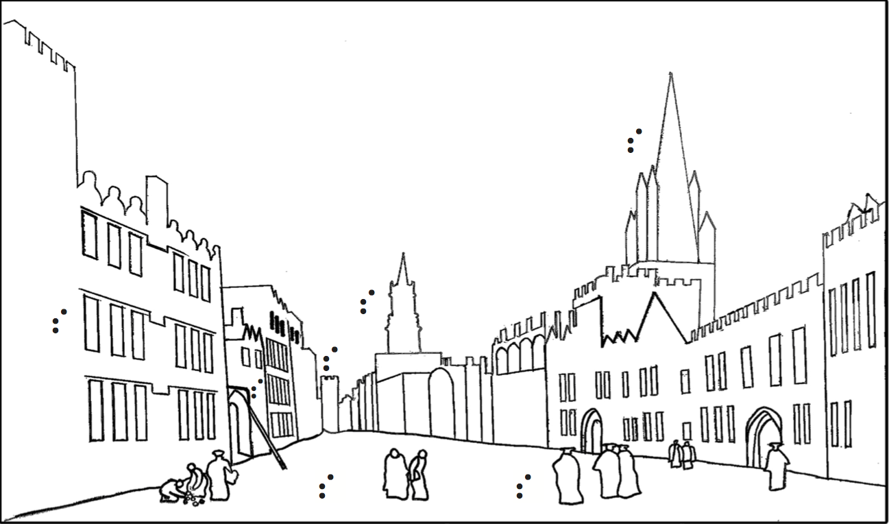

<!doctype html>
<head>
<title>Turner</title>
</head>
<body>

<!---->
<canvas id='myCanvas' width="968" height="950"></canvas>
<div id="img_src">
</div>
<p id="log" />
<script type="text/javascript">
var el = document.getElementsByTagName("canvas")[0];
  el.addEventListener("touchstart", handleEnd, false); //touch start is more effective?
  el.addEventListener("mouseenter", handleStart, false);
  //el.addEventListener("touchend", handleEnd, false);
  el.addEventListener("touchcancel", handleEnd, false);
  //el.addEventListener("touchmove", handleMove, false);
  //el.addEventListener("mouseup", handleEnd, false);
  //el.addEventListener("mouseleave", handleEnd, false);
  //el.addEventListener("pointerup", handleEnd, false);
  //el.addEventListener("click", handleEnd, false);
   log("initialising")

  // array for ongoing touches
  var onGoingTouches = []
  var touches = []
  //state for playing
  var state = 1;
  var timeMS = null;
  
function mark_image(coords) {
  var img = document.getElementById("img_src");
  var cnvs = document.getElementById("myCanvas");
  
  cnvs.style.position = "absolute";
  cnvs.style.left = img.offsetLeft + "px";
  cnvs.style.top = img.offsetTop + "px";
  for (var i in coords) {
    var ctx = cnvs.getContext("2d");
    ctx.beginPath();
    ctx.arc(coords[i].x, coords[i].y, 10, 0, 2 * Math.PI, false);
    ctx.lineWidth = 3;
    ctx.strokeStyle = '#00ff00';
    ctx.stroke();
  }
}
  mark_image([{'x':82,'y':365}, {'x':296,'y':434}, {'x':374,'y':405}, {'x':711,'y':169}, {'x':585,'y':544}, {'x':416,'y':341}]);
  function handleStart(evt) {
    evt.preventDefault();
    //log("touchstart.");
  }

  function handleCancel(evt) {
    evt.preventDefault();
    //var touches = filterItems(evt.changedTouches);
  }

  function handleEnd(evt) {
    evt.preventDefault();
    //log("touchend");
    var touches = evt.changedTouches;
   
    if (touches && touches.length > 0) {
      for (var i in touches) { 
        if (touches[i].pageX){
        alert("x: " + touches[i].pageX + " y: " + touches[i].pageY);
        log("x: " + touches[i].pageX + " y: " + touches[i].pageY); 
        fakeDAO(touches[i].pageX, touches[i].pageY);
        }
      }; 
    } else {
      log("can't figure out which touch to end");
    }
  }
   // General Functions
  function filterItems(touches) {
    return onGoingTouches.filter(function(d) { !touches.includes(d); });
  }


  function log(msg) {
    var p = document.getElementById('log');
    p.innerHTML = msg + "\n" + p.innerHTML;
  }

var touchBuffer = null;
// Fix up prefixing
window.AudioContext = window.AudioContext || window.webkitAudioContext;
var context = new AudioContext();
var source = '';
var url = './mus_audio/';
  
function fakeDAO(x, y) {
 if (x < 20) {
    if (y < 15) {
      if (state == 1) {
        state = 3;
        timeMS = Date.now()
        loadSound(url + 'overview.mp3');
      } else if (state == 3) {
        stopSound();
        state = 1;
      }
    } else if (y < 40) {
      stopSound();
      state = 1;
    }
 } else if ((x > 77 && x < 87) && (y > 360 && y < 370)) {
    if (state == 1) { 
      state = 2;
      loadSound(url+'windows.wav'); 
    }
    else if (state == 2) { 
      stopSound(); state = 1; 
    }
    else if (state == 3 && Date.now() > (curr_time + (2 * 60 *1000))) {
      loadSound(url+'windows.wav'); state = 1; 
    }
 } else if ((x > 286 && x < 306) && (y > 429 && y < 439)) {
    if (state == 1) { 
      state = 2;
      loadSound(url+'ladder.wav'); 
    }
    else if (state == 2) { 
      stopSound(); state = 1; 
    }
    else if (state == 3 && Date.now() > (curr_time + (2 * 60 *1000))) {
      loadSound(url+'ladder.wav'); state = 1; 
    }
 } else if ((x > 364 && x < 384) && (y > 395 && y < 415)) {
    if (state == 1) { 
      state = 2;
      loadSound(url+'carfaxtower.wav'); 
    }
    else if (state == 2) { 
      stopSound(); state = 1; 
    }
    else if (state == 3 && Date.now() > (curr_time + (2 * 60 *1000))) {
      loadSound(url+'carfaxtower.wav'); state = 1; 
    }
 } else if ((x > 701 && x < 721) && (y > 159 && y < 179)) {
    if (state == 1) { 
      state = 2;
      loadSound(url+'allsaintsspire.wav'); 
    }
    else if (state == 2) { 
      stopSound(); state = 1; 
    }
    else if (state == 3 && Date.now() > (curr_time + (2 * 60 *1000))) {
      loadSound(url+'allsaintsspire.wav'); state = 1; 
    }
 } else if ((x > 575 && x < 595) && (y > 534 && y < 554)) {
    if (state == 1) { 
      state = 2;
      loadSound(url+'staff.wav'); 
    }
    else if (state == 2) { 
      stopSound(); state = 1; 
    }
    else if (state == 3 && Date.now() > (curr_time + (2 * 60 *1000))) {
      loadSound(url+'staff.wav'); state = 1; 
    }
 } else if ((x > 406 && x < 426) && (y > 331 && y < 351)) {
    if (state == 1) { 
      state = 2;
      loadSound(url+'stmarys.wav'); 
    }
    else if (state == 2) { 
      stopSound(); state = 1; 
    }
    else if (state == 3 && Date.now() > (curr_time + (2 * 60 *1000))) {
      loadSound(url+'stmarys.wav'); state = 1; 
    }
 }  
}
  
function loadSound(url) {
  var request = new XMLHttpRequest();
  request.open('GET', url, true);
  request.responseType = 'arraybuffer';

  // Decode asynchronously
  request.onload = function() {
    context.decodeAudioData(request.response, function(buffer) {
      touchBuffer = buffer;
      playSound(touchBuffer);
    }, log("audio load failed"));
  }
  request.send();
}

function playSound(buffer) {
  source = context.createBufferSource(); // creates a sound source
  source.buffer = buffer;                    // tell the source which sound to play
  source.connect(context.destination);       // connect the source to the context's destination (the speakers)
  source.start(0);                           // play the source now
                                             // note: on older systems, may have to use deprecated noteOn(time);
}

function stopSound() {
  source.stop();
  source = '';
  touchBuffer = '';
}
</script>

</body>
</html>
